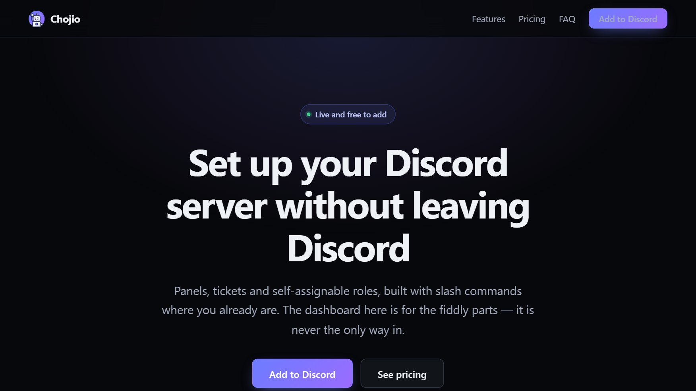

> DISCORD BOT
Chojio
LivePanels, tickets and role menus for your server, set up with slash commands.
chojio.com
> ABOUT
Discord server toolkit that replaces the usual stack of four single-purpose bots. Panels, support tickets and self-assignable roles, all set up with slash commands inside Discord rather than on a dashboard you have to go and find. Live and free to add, with a paid tier at $4.99 per month per server.
> DESIGN & SECURITY DECISIONS
- Slash-command first: Every setting is reachable from a slash command. The web dashboard is the faster surface for a long embed or a complicated form, never the only route to a setting.
- Buttons that outlive deploys: No in-memory component collectors, which is a real failure mode in other bots. Handlers are looked up by name at click time, so a panel posted months ago still works after a restart.
- Least privilege: Never asks for Administrator, and does not request Discord's Message Content intent, so it cannot read ordinary channel messages. A closed ticket produces a structured archive rather than a transcript of everything people typed.
- Permissions re-checked at click time: A role menu re-validates a role before assigning it and refuses if that role has gained something dangerous since the menu was built.
- Templates cannot make moderators: Server templates create roles, categories and channels, but moderation permissions are refused outright rather than hidden behind a confirmation dialog that only protects people who read them.
- Built versus planned: Panels, tickets and role menus are shipped. Forms, surveys, scheduled posts, a server builder and an audit log are labelled as not yet built rather than implied.